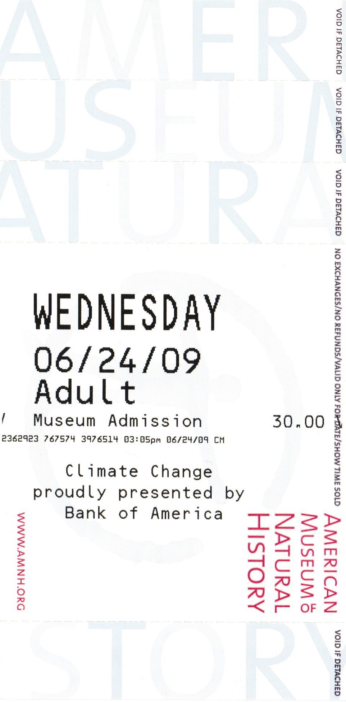
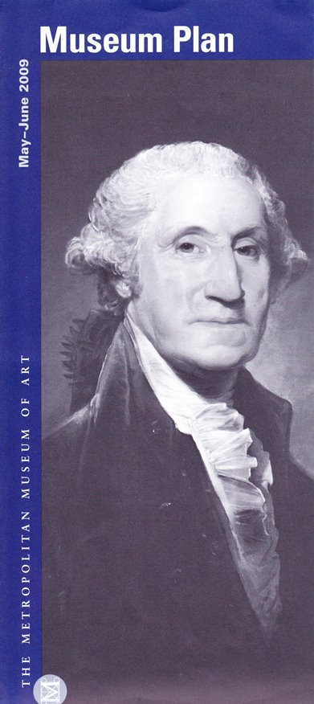
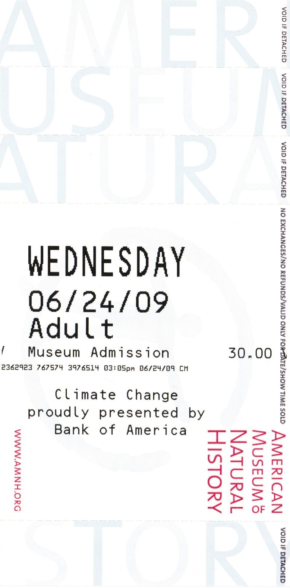
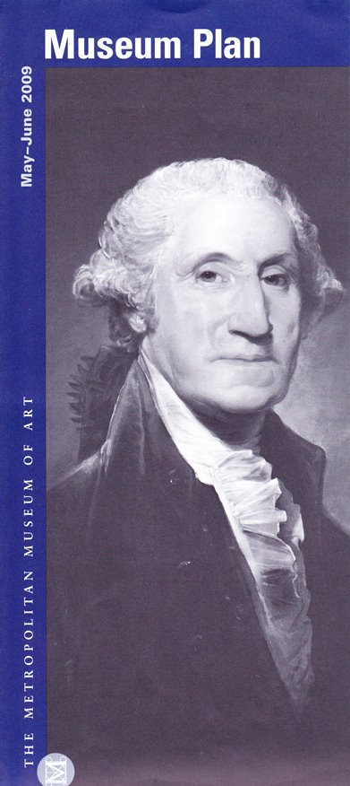
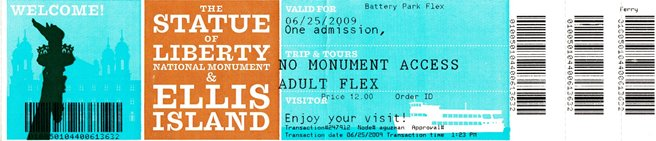
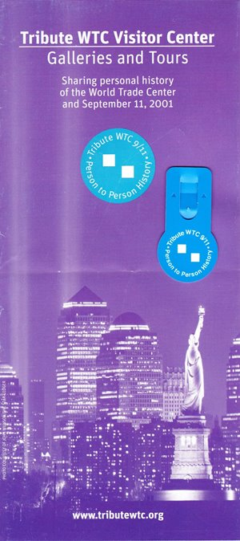
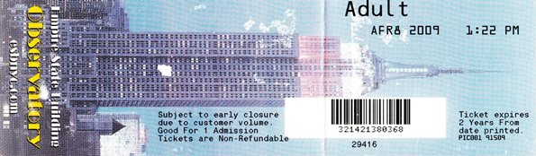
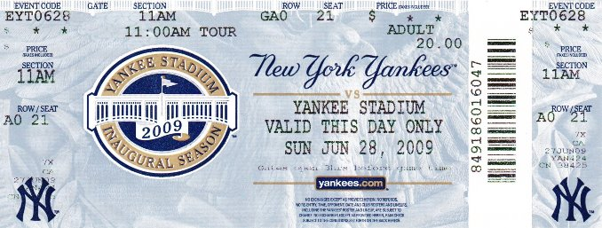

Museums
New York boasts some of the best museums in the world, but if you are struggling for time then the bare minimum involves a visit to The American Museum of Natural History and The Museum of Modern Art.
 New York boasts some of the best museums in the world, but if you are struggling for time then the bare minimum involves a visit to The American Museum of Natural History and The Museum of Modern Art.
 A trip to New York isn't complete without visiting its most famous landmark. The trip begins with a ferry ride to Liberty Island which offers fantastic views of Manhattan. Tours inside the statue, including a climb to the top, are now available again after a hiatus due to security concerns, although unfortunately this was not available on our visit. The trip then moves onto Ellis Island which was the country's main immigration centre. The excellent museum really captures the essence of what it was like for people arriving in the New World for the first time.
This touching tribute center details the stories of the people who were directly impacted by the attacks on the World Trade Center. The personal tragedy of the stories is magnified by the harrowing exhibits that are on display. However the stories of how people stuck together, survived, and managed to rebuild, leave you with a feeling of hope in the power of humanity.
One of New York’s most iconic buildings (along with the Chrysler Building, which unfortunately, is not open to visitors). A trip to the observation decks on the 86th and 102nd floors is a must. However it can be busy, we visited late to avoid the crowds and to get a stunning view of the Manhattan skyline at night. The internal art deco details are also not to be missed.
It isn’t often that you are on the doorstep of one of the most famous sports teams in the world. Situated a short subway ride from downtown Manhattan in The Bronx, Yankee Stadium is a great place to visit for baseball fans or sports fans in general. Unfortunately the team was on the road during our visit, but the stadium tour proved to be an excellent substitute. The stadium is as much a museum of baseball in general rather than specific to the New York Yankees. If you want to get a feel for why this is the nation’s pastime, then this tour is a must.
